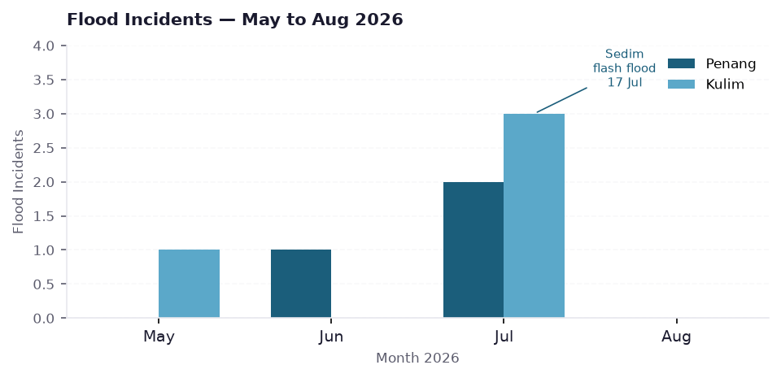
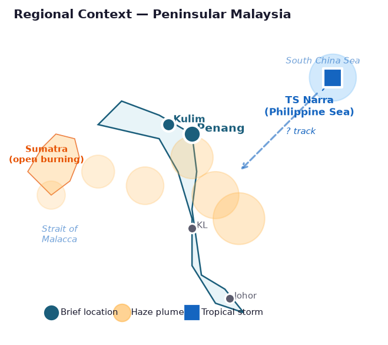
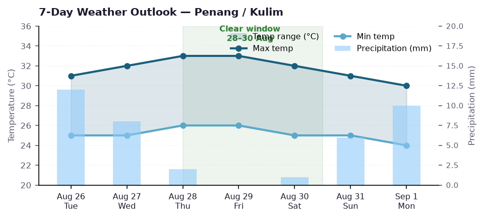
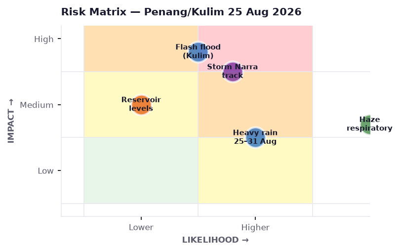
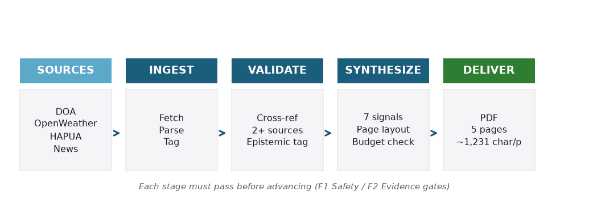
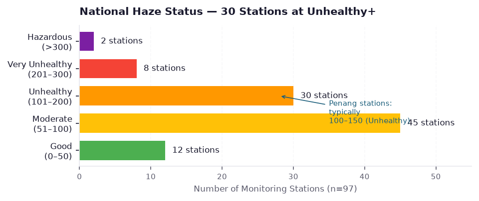

No active flood warnings for Penang or Kulim. Isolated thunderstorms clearing by evening. National haze at unhealthy levels across 30 monitoring areas — N95 masks advised for sensitive groups. Best weather window: 28–30 Aug.

DOA records show zero active flood warnings for both areas as of 25 Aug. Kedah general storm advisory issued 22 Aug carries no flood-specific activation.
OBSFlash flood hit Kulim's Sedim area 17 Jul after heavy rainfall. River systems may carry elevated levels — residual downstream flood risk if new heavy rain arrives within days.
DER
Hotspots in Sumatra & Kalimantan push smoke plumes toward Peninsular Malaysia via southwesterly winds. Penang stations typically 100–150 AQI (Unhealthy band). N95 masks for sensitive groups.
OBSScattered coastal thunderstorms this afternoon clearing by evening. Wind seasonal, sea state moderate — no marine advisory north of Penang.
OBS
TS Narra formed over Philippine Sea 23 Aug. Models show possible typhoon intensification. Impact on South China Sea & Peninsular east coast remains uncertain — monitor met.gov.my.
OBS


| Source | Type | Retrieved |
|---|---|---|
| DOA Portal (dapurtrends.doa.gov.my) | Official | 25 Aug 2026 |
| OpenWeatherMap API | Meteorological | 25 Aug 2026 |
| HAPUA Portal (hapua.doe.gov.my) | Official | 18 Aug 2026 |
| The Star · Bernama · Astro Awani | News | 22–25 Aug 2026 |
| The Malaysian Reserve · e-NewsinHub | News | Jul 2026 |
Epistemic discipline: every claim tagged OBS direct source · DER derived synthesis · INT interpretive · SPEC speculative. No claim without attribution.